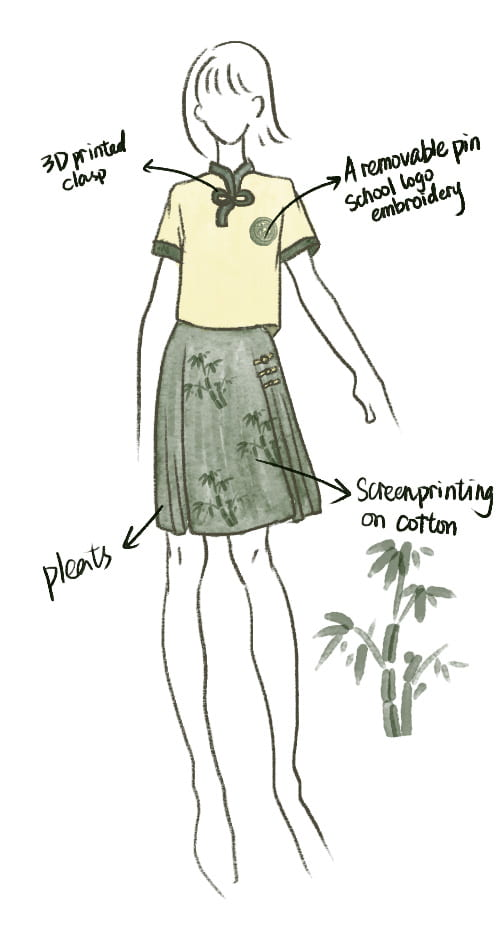
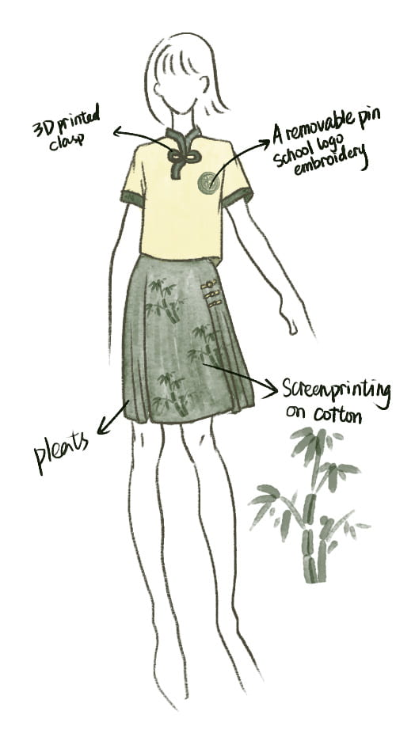

We Need Better School Uniforms!
Uniforms have been a defining part of my early years of education, fostering unity but often criticized for their standardized, unflattering design. Rather than satirizing the current system, this project proposes an alternative—an aesthetically refined uniform that balances function and student experience.

To inform my design process, I conducted an in-depth study on the factors contributing to the current uniform aesthetic (or lack thereof), including functional constraints, historical evolution, and psychological impact. Additionally, I explored the history of Chinese school uniforms, the influence of the education system on uniform design, and comparative studies of contemporary school uniforms worldwide, regular dresscode, and dressing behavior.
 



A key component of my research involved surveying students from Chinese public schools to gain direct insights into their experiences and preferences. The responses revealed valuable perspectives on how students would like their uniforms to change, their preferred styles, and the potential impact of well-designed uniforms on student confidence and well-being. These findings formed the foundation of my design approach, shaping a uniform that balances aesthetics, practicality, and cultural identity.